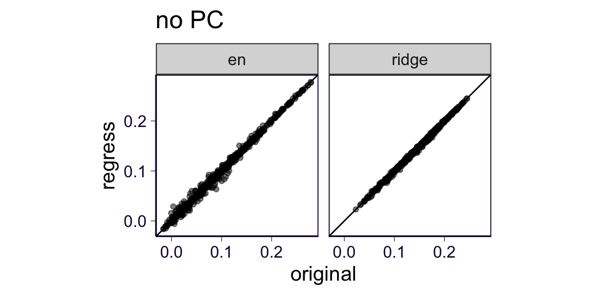

rm(list = ls())
library(ggplot2)
theme_set(theme_bw(base_size = 15))
source('https://gist.githubusercontent.com/liangyy/43912b3ecab5d10c89f9d4b2669871c9/raw/3ca651cfa53ffccb8422f432561138a46e93710f/my_ggplot_theme.R')
library(dplyr)
options(stringsAsFactors = F)
library(patchwork)
library(ggrepel)
library(data.table)
options(datatable.fread.datatable = F)
pheno_interest = c('weekly_alcohol', 'recurrent_depressive_disorder', 'parent_depression', 'parent_AD', 'handedness', 'daily_coffee', 'daily_cigarettes')
pheno_bcc = c('wbc', 'rbc', 'platelet', 'lymphocyte', 'monocyte', 'neutrophil', 'eosinophil', 'basophil')
pheno_ht = c('dbp', 'sbp') # , 'ht', 'hb', 'mcv', 'mch', 'mchc')
pheno_rand = paste0('random_pheno_', 0 : 9)
pheno_sig_dmri = paste0('single_sig_dmri_', 0 : 9)
pheno_sig_orig = paste0('single_sig_orig_', 0 : 9)
source('rlib.R')This is the CV performance preliminary results of the 2nd round of the BrainXcan. In particular, we run and compare various ways to do phenotype pre-processing. For simplicity, we leave non_idp_covar for the future.
orignal_t1_all_covar_no_pcorignal_t1_all_covar_w_pcscaled_t1_all_covar_no_pcscaled_t1_all_covar_w_pcregress_t1_all_covar_no_pcregress_t1_all_covar_w_pcorignal_dmri_all_covar_no_pcorignal_dmri_all_covar_w_pcregress_dmri_all_covar_no_pcregress_dmri_all_covar_w_pc# ridge
types = c('scaled', 'regress', 'original')
idps = c('dmri', 't1')
covars = c('all_covar')
pcs = c('no_pc', 'w_pc')
df = list()
for(tt in types) {
for(ii in idps) {
for(cc in covars) {
for(pp in pcs) {
if(ii == 'dmri' & tt == 'scaled') {
next
}
tmp = paste0('~/Desktop/tmp/ukb_idp/gw_ridge_2nd/', ii, '.', tt, '.', cc, '.', pp, '.perf.tsv.gz')
df[[length(df) + 1]] = read.table(tmp, sep = '\t', header = T) %>% mutate(scale_type = tt, idp_type = ii, pc_type = pp, covar_type = cc, model = 'ridge')
}
}
}
}
df = do.call(rbind, df)
# elastic net
types = c('scaled', 'regress', 'original')
idps = c('dmri', 't1')
covars = c('all_covar')
pcs = c('no_pc', 'w_pc')
df2 = list()
for(tt in types) {
for(ii in idps) {
for(cc in covars) {
for(pp in pcs) {
if(ii == 'dmri' & tt == 'scaled') {
next
}
tmp = paste0('~/Desktop/tmp/ukb_idp/gw_elastic_net_', ii, '_2nd/', ii, '.', tt, '.', cc, '.', pp, '/*tsv')
tmp_list = Sys.glob(tmp)
for(fn in tmp_list) {
tmp = read.table(fn, sep = '\t', header = T) %>% mutate(scale_type = tt, idp_type = ii, pc_type = pp, covar_type = cc, model = 'en')
tmp$phenotype = stringr::str_replace(tmp$phenotype, 'x', '-')
df2[[length(df2) + 1]] = tmp
}
}
}
}
}
df2 = do.call(rbind, df2)
df = rbind(df, df2)
#
# df_old = list()
# for(ii in idps) {
# tmp = paste0('~/Desktop/tmp/ukb_idp/heritability/pyemma.idp_', ii, '.tsv.gz')
# df_old[[length(df_old) + 1]] = read.table(tmp, sep = '\t', header = T) %>% mutate(idp_type = ii)
# }
# df_old[[length(df_old) + 1]] = read.table('~/Desktop/tmp/ukb_idp/heritability/pyemma.idp_original.tsv.gz', sep = '\t', header = T) %>% mutate(idp_type = 'original')
# df_old = do.call(rbind, df_old)p1 = df %>% filter(idp_type == 't1', pc_type == 'no_pc') %>% ggplot() + geom_histogram(aes(x = Spearman)) + facet_grid(scale_type ~ model) + ggtitle('T1: no PC adjustment') + th2
p2 = df %>% filter(idp_type == 't1', pc_type == 'w_pc') %>% ggplot() + geom_histogram(aes(x = Spearman)) + facet_grid(scale_type ~ model) + ggtitle('T1: with PC adjustment') + th2
p1 + p2## `stat_bin()` using `bins = 30`. Pick better value with `binwidth`.
## `stat_bin()` using `bins = 30`. Pick better value with `binwidth`.We can see the bimodal shape when the in regress/scaled. To look into the source, we compare regress and original for no PC adjustment.
tmp = df %>% filter(idp_type == 't1', covar_type == 'all_covar', pc_type == 'no_pc') %>% reshape2::dcast(phenotype + model ~ scale_type, value.var = 'Spearman')
tmp %>% ggplot() + geom_point(aes(x = original, y = regress), alpha = 0.5) +
# geom_text_repel(data = tmp %>% filter(abs(original - regress) < 0.001), aes(x = original, y = regress, label = phenotype), size = 3) +
th2 + coord_equal() + geom_abline(slope = 1, intercept = 0) +
facet_wrap(~model)The observation is that some IDPs have reduced CV performance when adjusting for covariates but others do not.
tmp = df %>% filter(idp_type == 't1', covar_type == 'all_covar', pc_type == 'no_pc') %>% reshape2::dcast(phenotype + model ~ scale_type, value.var = 'Spearman')
p1 = tmp %>% ggplot() + geom_point(aes(x = regress, y = scaled), alpha = 0.5) +
# geom_text_repel(data = tmp %>% filter(abs(scaled - regress) < 0.001), aes(x = regress, y = scaled, label = phenotype), size = 3) +
th2 + coord_equal() + geom_abline(slope = 1, intercept = 0, color = 'gray') + ggtitle('no PC') +
facet_wrap(~model)
tmp = df %>% filter(idp_type == 't1', covar_type == 'all_covar', pc_type == 'w_pc') %>% reshape2::dcast(phenotype + model ~ scale_type, value.var = 'Spearman')
p2 = tmp %>% ggplot() + geom_point(aes(x = regress, y = scaled), alpha = 0.5) +
# geom_text_repel(data = tmp %>% filter(abs(scaled - regress) < 0.001), aes(x = regress, y = scaled, label = phenotype), size = 3) +
th2 + coord_equal() + geom_abline(slope = 1, intercept = 0, color = 'gray') + ggtitle('with PC') +
facet_wrap(~model)
p1p2## Warning: Removed 2 rows containing missing values (geom_point).Overall they agree.
For T1, we may or may not want to use PC adjustment but we do want to use “scaled” scale.
tmp = df %>% filter(idp_type == 't1', covar_type == 'all_covar', scale_type == 'scaled') %>% reshape2::dcast(phenotype + model ~ pc_type, value.var = 'Spearman')
p1 = tmp %>% ggplot() + geom_point(aes(x = no_pc, y = w_pc), alpha = 0.5) +
# geom_text_repel(data = tmp %>% filter(abs(original - regress) < 0.001), aes(x = original, y = regress, label = phenotype), size = 3) +
th2 + coord_equal() + geom_abline(slope = 1, intercept = 0) + facet_wrap(~ model)
p1## Warning: Removed 10 rows containing missing values (geom_point).tmp = df %>% filter(idp_type == 't1', covar_type == 'all_covar', scale_type == 'scaled') %>% reshape2::dcast(phenotype + pc_type ~ model, value.var = 'Spearman')
p1 = tmp %>% ggplot() + geom_point(aes(x = ridge, y = en), alpha = 0.5) +
# geom_text_repel(data = tmp %>% filter(abs(original - regress) < 0.001), aes(x = original, y = regress, label = phenotype), size = 3) +
th2 + coord_equal() + geom_abline(slope = 1, intercept = 0) + facet_wrap(~ pc_type)
p1p1 = df %>% filter(idp_type == 'dmri', pc_type == 'no_pc') %>% ggplot() + geom_histogram(aes(x = Spearman)) + facet_grid(scale_type ~ model) + ggtitle('dMRI: no PC adjustment') + th2
p2 = df %>% filter(idp_type == 'dmri', pc_type == 'w_pc') %>% ggplot() + geom_histogram(aes(x = Spearman)) + facet_grid(scale_type ~ model) + ggtitle('dMRI: with PC adjustment') + th2
p1 + p2## `stat_bin()` using `bins = 30`. Pick better value with `binwidth`.
## `stat_bin()` using `bins = 30`. Pick better value with `binwidth`.Overall, they agree well.
Since we think dMRI should be used in the original scale, we compare original and regress scaling.
tmp = df %>% filter(idp_type == 'dmri', covar_type == 'all_covar', pc_type == 'no_pc') %>% reshape2::dcast(phenotype + model ~ scale_type, value.var = 'Spearman')
p1 = tmp %>% ggplot() + geom_point(aes(x = original, y = regress), alpha = 0.5) +
# geom_text_repel(data = tmp %>% filter(abs(original - regress) < 0.001), aes(x = original, y = regress, label = phenotype), size = 3) +
th2 + coord_equal() + geom_abline(slope = 1, intercept = 0) + ggtitle('no PC') + facet_wrap(~model)
tmp = df %>% filter(idp_type == 'dmri', covar_type == 'all_covar', pc_type == 'w_pc') %>% reshape2::dcast(phenotype + model ~ scale_type, value.var = 'Spearman')
p2 = tmp %>% ggplot() + geom_point(aes(x = original, y = regress), alpha = 0.5) +
# geom_text_repel(data = tmp %>% filter(abs(original - regress) < 0.001), aes(x = original, y = regress, label = phenotype), size = 3) +
th2 + coord_equal() + geom_abline(slope = 1, intercept = 0) + ggtitle('with PC') + facet_wrap(~model)
p1
p2They have very similar CV performance.
For dMRI, we may want to use PC adjustment in original scale.
tmp = df %>% filter(idp_type == 'dmri', covar_type == 'all_covar', scale_type == 'original') %>% reshape2::dcast(phenotype + model ~ pc_type, value.var = 'Spearman')
p1 = tmp %>% ggplot() + geom_point(aes(x = no_pc, y = w_pc), alpha = 0.5) +
# geom_text_repel(data = tmp %>% filter(abs(original - regress) < 0.001), aes(x = original, y = regress, label = phenotype), size = 3) +
th2 + coord_equal() + geom_abline(slope = 1, intercept = 0) + facet_wrap(~model)
p1## Warning: Removed 18 rows containing missing values (geom_point).tmp = df %>% filter(idp_type == 'dmri', covar_type == 'all_covar', scale_type == 'original') %>% reshape2::dcast(phenotype + pc_type ~ model, value.var = 'Spearman')
p1 = tmp %>% ggplot() + geom_point(aes(x = ridge, y = en), alpha = 0.5) +
# geom_text_repel(data = tmp %>% filter(abs(original - regress) < 0.001), aes(x = original, y = regress, label = phenotype), size = 3) +
th2 + coord_equal() + geom_abline(slope = 1, intercept = 0) + facet_wrap(~ pc_type)
p1